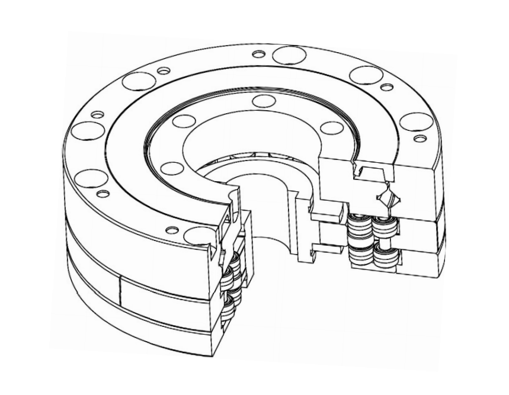

活齿减速器
以全新结构，定义下一代机器人与机床核心动力
行业痛点：被“卡脖子”的机器人心脏
减速器是工业机器人中成本占比最高的核心部件。全球高端市场长期被国外品牌垄断，国产方案在精度、寿命和效率上存在代差，利润空间狭窄。面对即将爆发的人形机器人时代，市场亟需一场动力革命。
技术垄断
高端RV与谐波减速器市场由日本两家企业主导，形成技术与价格壁垒。
性能差距
国产减速器在精度保持性、工作寿命、传动效率等关键指标上全面落后。
未来挑战
人形机器人对减速器提出了体积更小、效率更高、成本更低的苛刻要求。
我们的解决方案：活齿减速器
苏州冷石传动科技，依托北京航空航天大学的深厚研究底蕴，推出革命性的“活齿减速器”，旨在全面替代现有技术，为中国乃至全球的机器人产业提供一颗强大的“中国心”。
滚动活齿减速器
纯滚动摩擦替代滑动摩擦，实现多齿啮合均载，高精度旋转执行器全新解决方案。
- ✓超高效率: 传动效率高达90%以上，长时间工作超低磨损。
- ✓零背隙高精度: 空程小于10角秒, 单向定位精度小于25角秒。
- ✓大扭矩高刚性: 扭矩刚性比传统RV减速器高20%以上。
滑动活齿减速器
多齿啮合，小体积大扭矩，性能全面提升，机器人关节减速器全新解决方案。
- ✓结构紧凑: 体积相比传统谐波减小1/3。
- ✓承载翻倍: 扭矩密度提升1.5倍以上，抗冲击。
- ✓效率提升: 传动效率提升至80%以上。
性能对比分析
多维度减速器性能对比，全面展示各类型减速器的技术特性。
滚动活齿减速器与其他减速器对比图
滚动活齿减速器在传动精度、效率和刚度等方面表现优异，相比行星减速器具有更好的传动性能，与RV减速器相比在多项指标上展现出明显优势。
滑动活齿减速器与其他减速器对比图
滑动活齿减速器在抗冲击性和速度系数方面表现突出，相比谐波减速器在多项性能指标上更具优势，而行星减速器则在效率方面展现出独特的性能特点。
应用领域
活齿减速器在精密制造领域有着广泛的应用途径，为追求极致的客户提供高性能方案。
现有产品
活齿机器人减速器
活齿减速器转台
应用场景
工业机器人/人形机器人/四足机械狗
四轴/五轴机床
新能源汽车/航空航天制造……
发展蓝图与团队实力
我们拥有顶尖的专家团队和清晰的产业化路径，致力于成为全球机器人关节减速器领域的领导者。
发展规划
2023-2024
滚动活齿减速器完成研发阶段，开始外部测试。滑动活齿减速器开始研发阶段。
2025
滚动活齿减速器试验完成进入量产阶段，滑动活齿减速器进入外部测试。
2026
实现1万-2万台滚动活齿减速器产能，滑动活齿减速器开始量产准备。
2027-2030
目标达到10万台以上工业机器人/机床用滚动活齿减速器年产能，20万-50万台人形机器人减速器年产能。
核心优势
创始人：陈志同教授
苏州冷石传动科技有限公司总经理，山东天舟精密机械有限公司董事长，北京航空航天大学机械工程及自动化学院教授，博士生导师。
顶尖团队
核心团队汇聚北京航空航天大学，东京大学等顶尖学府硕士博士。核心研发团队硕博比例接近50%。
显著成本优势
通过结构与工艺创新，预计制造成本降低1/3，自研核心制造设备，设备投入降低2/3。
市场机遇与融资计划
我们的目标市场覆盖百亿级的工业机器人、精密机床，以及潜力巨大的千亿级人形机器人市场。
本轮融资计划
3000万
用于建设年产3万台的活齿减速器生产线
联系我们
新原理 新结构 高精度 长寿命
冷石传动竭力为工业母机，工业机器人，人形机器人和精密仪器提供最满意的精密传动解决方案